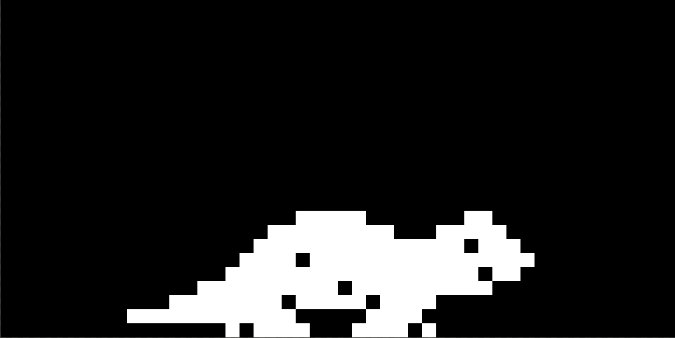

Tamaquino
We are going to make a virtual pet, just like the classic 90s Tamagotchis! The code in this workshop is based on Tamaguino . If you want to further improve your pet after this workshop, you can look at the original project to find some inspiration and tips. You can make it portable, for example!
Contents
First: Editor tips
The Arduino IDE is nice and easy to use, but it misses some handy features most modern editors have. Therefore, we use Visual Studio Code with the Arduino extension . Don't worry, you are completely free to use the normal Arduino IDE for this workshop, this is just a handy little tip! If you ever find the Arduino IDE a bit difficult to use, give VSCode a try!
Getting started
Make sure you have the following things by your side:
- Arduino UNO with USB cable
- Breadboard
- The components we sent you!
Your package should at least include an OLED screen and 3 push buttons for this workshop. So check if you have them. But we've thrown in some extra sensors for you to experiment with ;-) They're not required though.
Setting up the hardware
Let's first set up the basic hardware to run our version of Tamaguino. Let's look at the following diagram to see how everything should be connected. IMPORTANT: The little OLED screen needs 3.3V, so double check you did not plug it into the 5V of your Arduino. DOUBLE CHECK IT AGAIN. We don't mind if you smoke, but let's not use this little screen for that.

Software
We assume you already have the Arduino IDE (and maybe the VSCode setup from the tips at the top) installed. If not, please do!
Download the basic setup by going to https://github.com/Q42/tamaguino , and choosing 'Download ZIP' under the green 'Code' button. Extract it somewhere on your computer, and open the Tamaquino Arduino project you find in there.
Before you can upload this code to you Arduino, we need to download and install some libraries. Go to the library manager (Arduino IDE: Sketch -> Inclube Library -> Manage Libraries, VSCode: Ctrl-Shift-P -> Arduino: Library Manager), and find & install the following libraries:
- Adafruit GFX Library
- Adafruit SSD1306
- Adafruit BusIO
Now you should be able to upload this code to your Arduino. Make sure you select the right board and port, and upload it!
It's alive!
Now you should have your own happy little Dino walk around the screen. But beware, it needs care! It can go hungry, so you can feed it by clicking the left button. You can spot your Dino being low on energy because it won't walk around that fast anymore. After processing all that food it will also make things dirty. You can clean up that shit by clicking the right button. It needs attention too. Currently, you can do that by clicking the middle button. But you might notice that nothing seems to happen. That's because we don't have anything yet to show the happiness of Dino, or an animation to show you giving it attention. Let's see how you can improve that!
Customizing the program
Now, you can customize anything! Let's go through bits of the program to see how it works and how you can add functionality.
Customizing the algorithm
Somewhat at the top of our loop(), there is a block of code that
updates Dino's stats once per second. It currently has 3 stats: energy, happiness and a poopometer.
The first two slowly go down over time, and the third slowly goes up. If energy and happiness both
are zero, Dino dies :(
The poopometer keeps track of how full Dino's belly is, and pushes one poop out if the meter reaches 100.
Of course you can modify this algorithm. For development it might be easier to speed things up a bit. Maybe you think it's a logical thing to give Dino diarrhea if you feed him too much. You can also introduce more stats to make things more realistic, or couple some of the stats to sensor values (more on that later!).
Interactions
Below the block of code updating the stats, we have the code that handles button presses. You can couple anything you want to a button! If you have some extra buttons laying around, you can also add more buttons if you want.
Drawing simple shapes
All drawing-related code is in the '_graphics.ino' file. To see how simple shapes are drawn, we can look at how the sun and moon are drawn. The sun is simplest, as it is just a filled circle:
display.fillCircle(xPos, 2 * sunRadius, sunRadius, WHITE);BLACK and
WHITE.
To draw the moon, we simply draw the sun with a black circle partly overlapping it. Using sprites costs memory, so as long as we can draw things with primitive shapes, we should!
display.fillCircle(xPos, 2 * sunRadius, sunRadius, WHITE);
display.fillCircle(xPos - moonShadow, 2 * sunRadius, sunRadius, BLACK);Drawing bitmaps
There's lots of stuff on the screen that are clearly not primitive shapes. The mountains, trees, Dino itself, and more. Those are all sprite bitmaps. Those bitmaps are defined in the '_bitmaps.ino' file.
These large arrays are raw byte arrays and appear quite cryptic, but are luckily not written by hand! There are some converter tools to go from an image file to these arrays. You can see the original images in the /images folder of the folder you extracted at the beginning. Go have a look! For example, this is one of our Dino sprites (but then, you know, much bigger):

You can easily replace or add sprites. If you have some pixelart skills, you can event create your own pet!
In case you don't, you can use an existing image and modify it a bit.
If you then upload that image to image2cpp,
it can convert it to a byte array for you. The default settings should work fine. Make sure you
add new sprites to the '_bitmaps.ino' file using
const unsigned char {spriteName} [] PROGMEM!
This makes sure the arrays are stored in the Arduino's flash memory (where the program itself is also stored),
which makes sure we do not waste precious SRAM memory, next to that the GFX library only works with bitmaps
from PROGMEM.
Maybe you can show Dino's happiness by modifying his sprites to make him look sad or a bit down. In that case, be aware that Dino actually has 6 sprites, since we animate him walking around. Three sprites for walking to the left, and another three for walking to the right (sadly our GFX library cannot mirror our sprites).
Using sprites you can also show an animation when giving Dino attention, much like the eating animation.
Since it is not super critical if the rest of the program is paused for a bit, it is easiest to just work
with delay() to show different sprites after each other. You can have a look at
the eating animation as an example:
void drawEatAnimation() {
// Clear the display first
display.fillRect(0, 0, display.width(), display.height(), BLACK);
for (int j = 0; j < 3; j++) {
for (int i = 0; i < 4; i++) {
display.clearDisplay();
display.drawBitmap(50, 40, steak, 24, 24, WHITE);
if (j > 0)
display.fillCircle(76, 59, 13, BLACK);
if (j == 2)
display.fillCircle(60, 63, 13, BLACK);
display.drawBitmap(80, 24, eating[i], 48, 40, WHITE);
delay(150);
display.display();
}
}
}display.display() in the loop. This makes sure the display actually shows what we
have drawn.
Troubleshooting
[Error] Verifying sketch 'Tamaquino/Tamaquino.ino': Exit with code=1
If you have an error like this it is most likely you haven't installed the referenced library yet.
Verifying...
_graphics:2:10: fatal error: Adafruit_SSD1306.h: No such file or directory
#include
^~~~~~~~~~~~~~~~~~~~
compilation terminated.
exit status 1
[Warning] Failed to generate IntelliSense configuration.
[Error] Verifying sketch 'Tamaquino/Tamaquino.ino': Exit with code=1 In this case the SSD1306 library needs to be installed.
Error: No such file or directory, cannot open /dev/tty.usbmodem142101
When using Arduino for Visual Studio Code you may need to set the serial port in `.vscode/arduino.json` as follows:
{
"board": "arduino:avr:uno",
"sketch": "Tamaquino/Tamaquino.ino",
"port": "/dev/tty.usbmodem143101"
}